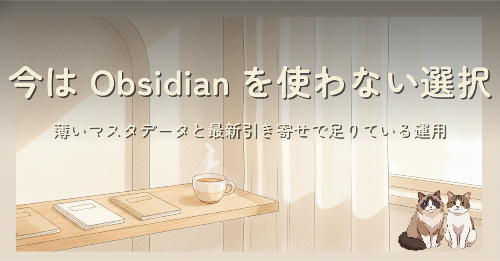
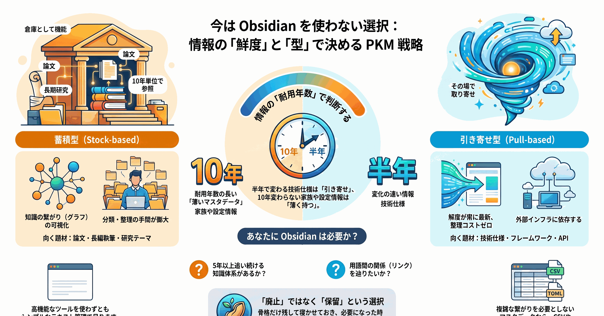
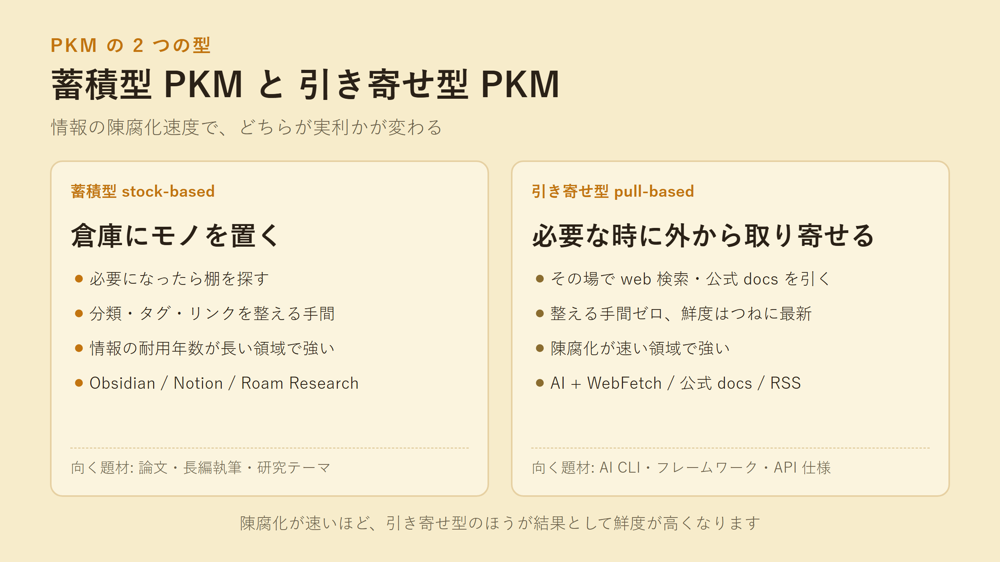
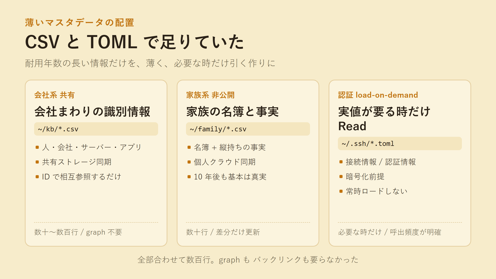
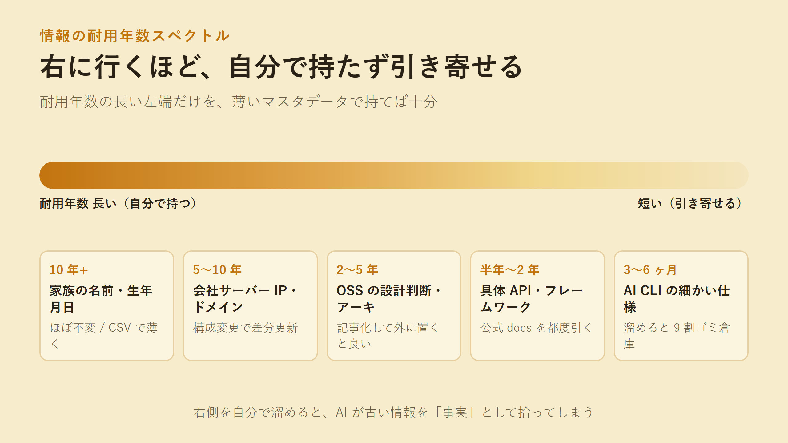
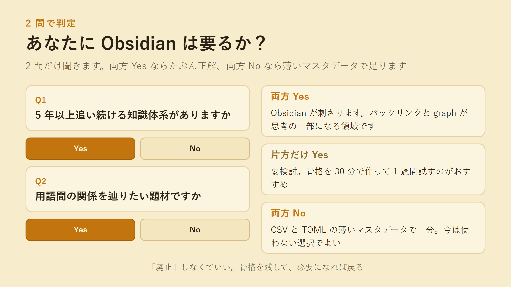

Obsidian の vault を骨格まで作り、実運用に踏み出す前に手を止めました。廃止ではなく保留です。AI の進化速度が個人ナレッジの陳腐化を超えていて、貯めた情報を AI に読ませるほどトークンは無駄になります。今の自分に必要なのは薄くて重要なマスタデータだけで、それは既に CSV と TOML で持っていました。それでも Obsidian が刺さる人はいる、という話まで含めた設計判断メモです。
Obsidian の vault を、ディレクトリ 4 つ・クラウド同期・junction 配線・8 章の plan md まで作ってから、実運用に踏み出す前に手を止めました。「Obsidian が悪い」でも「PKM は不要」でもありません。骨格まで作って初めて、今の自分の用途と噛み合わないことに気づいたという記録です。骨格は消していません。将来の自分が拾えるように寝かせてあります。


蓄積型は倉庫にモノを置いて、必要になったら棚を探す作り。引き寄せ型は必要になったときにその場で外から取り寄せる作り。情報の陳腐化が速い領域ほど、引き寄せ型のほうが結果として鮮度が高くなります。技術記事や公式 docs のように「常に最新版がどこかに置いてある」情報は、自分で持たなくてもすぐ取り出せます。むしろ持たないほうが、古い情報を最新だと勘違いする事故を防げます。

会社まわりは共有ストレージ経由の CSV、家族まわりは個人クラウド同期の CSV、認証情報は暗号化前提の TOML。全部合わせて数百行に収まります。ID で相互参照するだけで、バックリンクも graph も要りませんでした。

左端に家族の名前、右端に AI CLI の細かい仕様。右に行くほど「自分で持たずに引き寄せる」ほうが実利があります。右側を溜め込むと、AI が古い情報を「事実」として拾ってしまう事故が起きます。

2 問だけ聞く判定フロー。「5 年以上追い続ける知識体系があるか」「用語間の関係を辿りたいか」。両方 Yes ならたぶん正解、片方だけなら要検討、両方 No なら薄いマスタデータで十分。Obsidian が刺さる人がいて、その人には正解。自分は「10 年書き続けるつもりの知識体系」を持たなかっただけです。
同じ日に書いた「X の複数アカウント運用: Chrome 拡張で挫折 → Firefox Multi-Account Containers に流れ着いた記録」もあります。そちらは「自作で境界突破は勝てない」、この記事は「自作で情報蓄積も勝てない」。同じ日に、別の場所で、似た形の白旗を上げました。